jaden pathammavong ( vol. 01 )
Liner
Notes
cmda / virginia tech
wind ensemble
philharmonic orchestra
kendo
As a senior student at Virginia Tech studying Computational Modeling and Data Analytics (CMDA), I have a strong interest in the intersection of design, technology, and data. I am also interested in economics. I like finding the math behind human decisions. I spend my time exploring how quantitative models can explain the psychological and economic ways we value and exchange resources.
In addition to my developing skills in data analysis, visualization, mathematics, and statistics, I'm currently exploring data engineering, improving sql, python, and databricks. I want to work with cloud, data, and clients.
Outside of academics, I practice Kendo, a Japanese martial art that has taught me focus, discipline, and respect. I’m also deeply involved in music, I am a part of Virginia Tech's wind ensemble and philharmonic orchestra. Continuing my dedication to playing helps me stay creative and balanced both in life and in problem-solving.
Discography
now playing Current Classes: Cryptography 2, Mathematical Modeling 2, Senior Capstone, Experimental Design, Philharmonic orchestra
Gallery